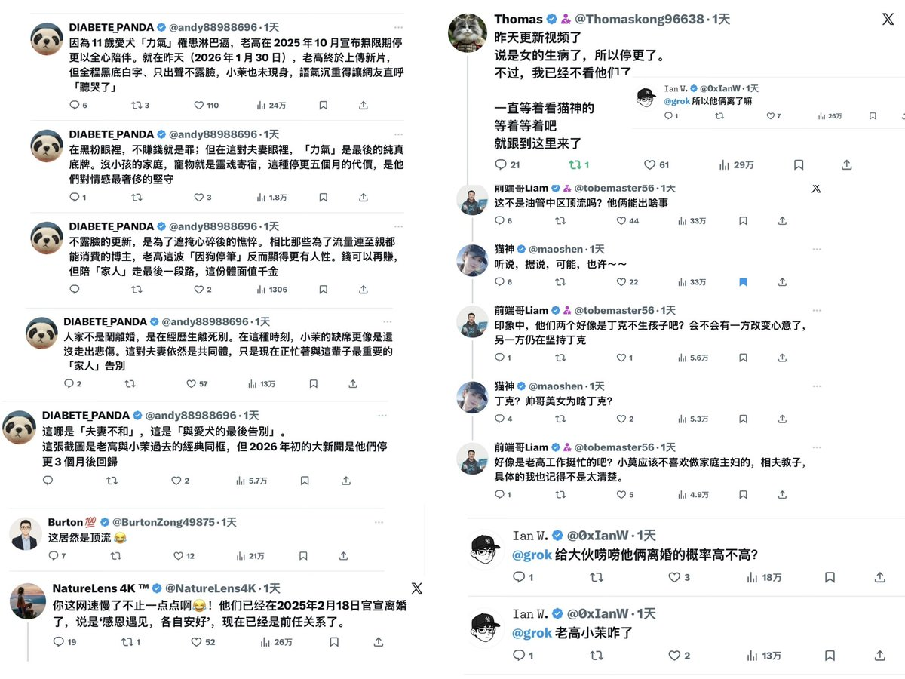

@maoshen @0xIanW @tobemaster56 @andy88988696 @Thomaskong96638 xm流量


哇塞，是时候回顾一下了，原来流量可以这样玩👍😂
猫神这一推296万，给大家贡献了多少流量？
20万以上的有7个，最多的居然有57万，单帖最多的有33万，10万以上的太多了
其中：
@0xIanW ：26 +18+13=57万
@tobemaster56 ：33w+5.6w+4.9w=43.5万
@andy88988696 ：24+13+2=39万
@Thomaskong96638 https://t.co/Zwey3W8vUg https://t.co/jWq9zpDa1W
猫神这一推296万，给大家贡献了多少流量？
20万以上的有7个，最多的居然有57万，单帖最多的有33万，10万以上的太多了
其中：
@0xIanW ：26 +18+13=57万
@tobemaster56 ：33w+5.6w+4.9w=43.5万
@andy88988696 ：24+13+2=39万
@Thomaskong96638 https://t.co/Zwey3W8vUg https://t.co/jWq9zpDa1W